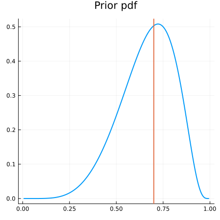
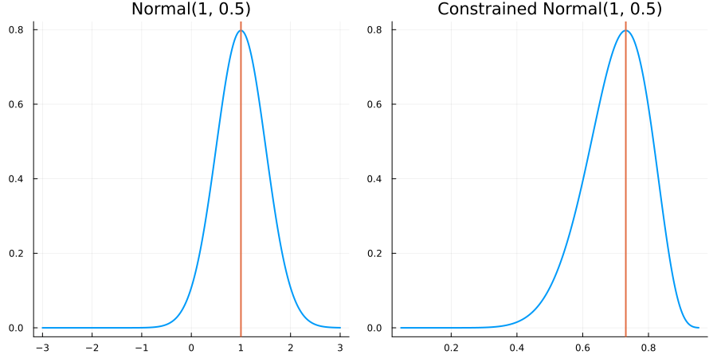
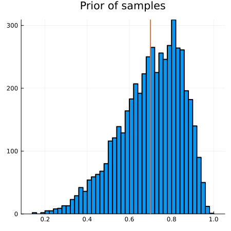
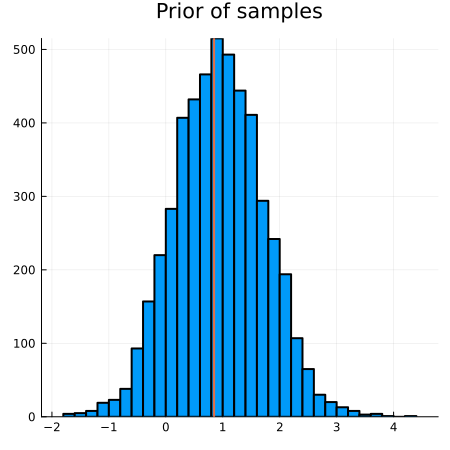
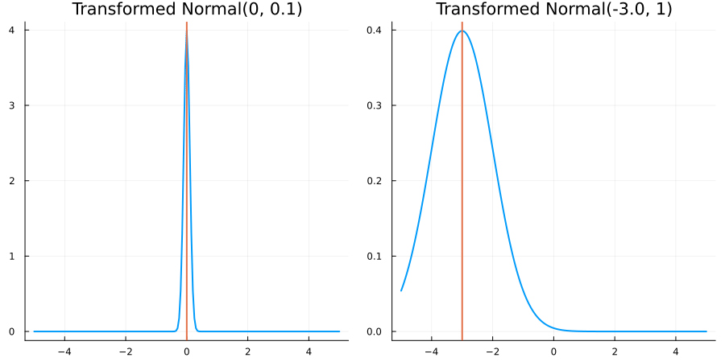
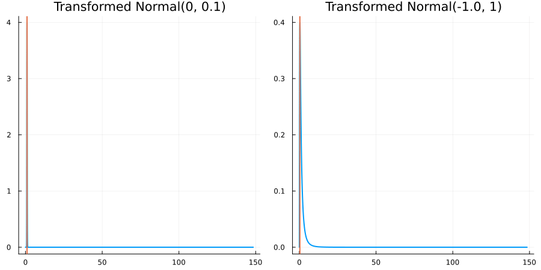
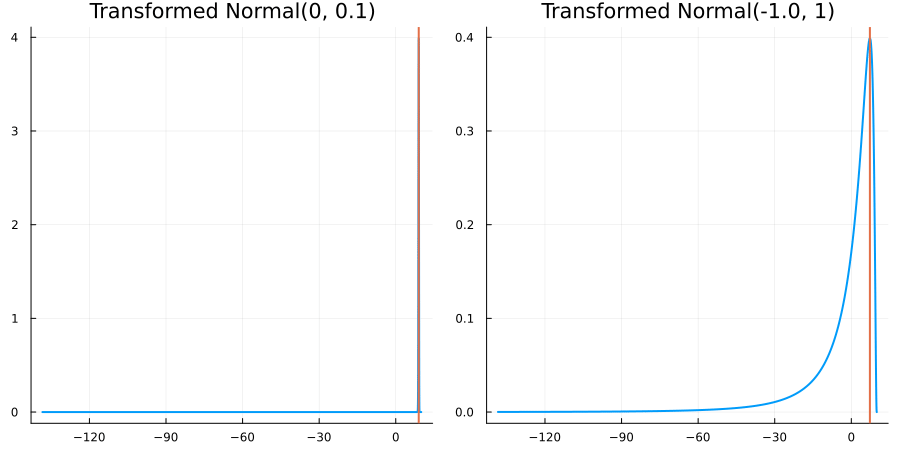
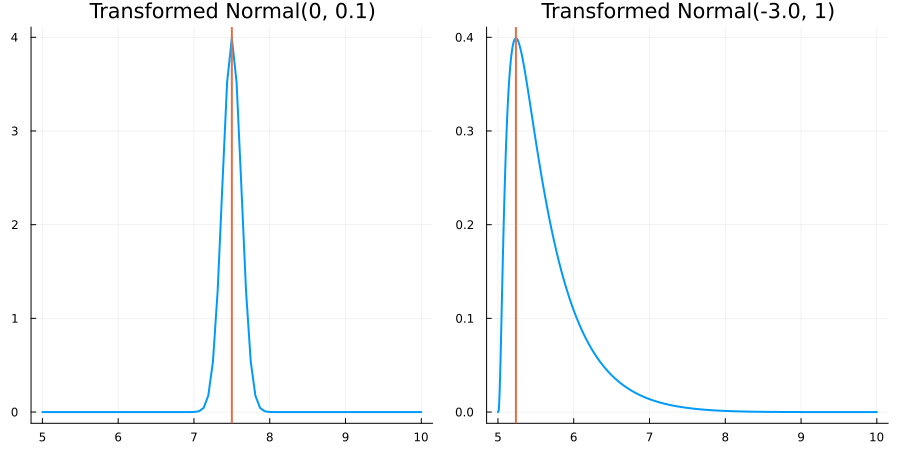

Defining prior distributions
Bayesian inference begins with an explicit prior distribution. This page describes the interface EnsembleKalmanProcesses provides for specifying priors on parameters, via the ParameterDistributions module (src/ParameterDistributions.jl).
Summary
ParameterDistribution objects
A prior is specified by a ParameterDistribution object, which has three components:
- The distribution itself, given as a ParameterDistributionType object. This includes standard Julia Distributions, GaussianRandomFields as well as empirical/sample-based distributions, and thus can be univariate, multivariate or functional. To clarify, despite our use of the term "Kalman processes," the prior distribution is not required to be Gaussian.
- A constraint (or array of constraints) on the domain of the distribution, given as a ConstraintType or
Array{ConstraintType}object (the latter case builds a multivariate constraint as the Cartesian product of one-dimensional Constraints). This is used to enforce physical parameter values during inference: the model is never evaluated at parameter values outside the constrained region, and the posterior distribution will only be supported there. - The parameter name, given as a
String.
In multiparameter settings, one should define one ParameterDistribution per parameter, and then concatenate these either in the constructor or with combine_distributions. This is illustrated below and in the Example combining several distributions.
Parameters in unconstrained spaces are often denoted $u$ or $\theta$ in the literature. In the code, method names featuring _u imply the return of a computational, unconstrained parameter.
Parameters in physical/constrained spaces are often denoted $\mathcal{T}^{-1}(u)$, $\mathcal{T}^{-1}(\theta)$, or $\phi$ in the literature (for some bijection $\mathcal{T}$ mapping to the unbounded space). In the code, method names featuring _ϕ imply the return of a physical, constrained parameter, and will always require a prior as input to perform the transformations internally.
For more notations see our Glossary.
Recommended constructor
constrained_gaussian() is a streamlined constructor for ParameterDistributions which addresses the most common use case; more general forms of the constructor are documented below, but we highly recommend that users begin here when it comes to specifying priors, only using the general constructor when necessary.
Usage:
using EnsembleKalmanProcesses.ParameterDistributions # for `constrained_gaussian`, `combine_distributions`
prior_1 = constrained_gaussian("param_1", μ_1, σ_1, lower_bound, upper_bound)
prior_2 = constrained_gaussian("param_2", μ_2, σ_2, 0.0, Inf, repeats=3)
prior = combine_distributions([prior_1, prior_2])ParameterDistribution with 2 entries:
'param_1' with EnsembleKalmanProcesses.ParameterDistributions.Constraint[Bounds: (0.0, 1.0)] over distribution EnsembleKalmanProcesses.ParameterDistributions.Parameterized(Distributions.Normal{Float64}(μ=-8.166022598761285e-6, σ=1.3125811715866231))
'param_2' with EnsembleKalmanProcesses.ParameterDistributions.Constraint[Bounds: (0.0, ∞), Bounds: (0.0, ∞), Bounds: (0.0, ∞)] over distribution EnsembleKalmanProcesses.ParameterDistributions.VectorOfParameterized{Distributions.Normal{Float64}}(Distributions.Normal{Float64}[Distributions.Normal{Float64}(μ=-0.8047189562170501, σ=0.47238072707743883), Distributions.Normal{Float64}(μ=-0.8047189562170501, σ=0.47238072707743883), Distributions.Normal{Float64}(μ=-0.8047189562170501, σ=0.47238072707743883)])
prior_1 is a ParameterDistribution describing a prior distribution for a parameter named "param_1" taking values on the interval [lower_bound, upper_bound]; the prior distribution has approximate mean $μ_1$ and standard deviation $σ_1$.
prior_2 is a ParameterDistribution describing a 3-dimensional prior distribution for a parameter named "param_2" with each dimensions taking independent values on the half-open interval [0.0, Inf); the marginals of this prior distribution have approximate mean $μ_2$ and standard deviation $σ_2$.
The use case constrained_gaussian() addresses is when prior information is qualitative, and exact distributions of the priors are unknown: i.e., the user is only able to specify the physical and likely ranges of prior parameter values at a rough, qualitative level. constrained_gaussian() does this by constructing a ParameterDistribution corresponding to a Gaussian "squashed" to fit in the given constraint interval, such that the "squashed" distribution has the specified mean and standard deviation (e.g. prior_2 above is a log-normal for each dimension).
The parameters of the Gaussian are chosen automatically (depending on the constraint) to reproduce the desired μ and σ — per the use case, other details of the form of the prior distribution shouldn't be important for downstream inference!
The most common case of slow or failed construction is when requested parameters place too much mass at the hard boundary. A typical case is when the requested variance satisfies $|\sigma| \approx \mathrm{dist}(\mu,\mathrm{boundary})$ Such priors can be defined, but not with our convenience constructor. If this is not the case but you still get failures please let us know!
Plotting
For quick visualization we have a plot recipe for ParameterDistribution types. This will plot marginal histograms for all dimensions of the parameter distribution. For example,
# with values:
# e.g. lower_bound = 0.0, upper_bound = 1.0
# μ_1 = 0.5, σ_1 = 0.25
# μ_2 = 0.5, σ_2 = 0.25
using Plots
plot(prior)One can also access the underlying Gaussian distributions in the unconstrained space with
using Plots
plot(prior, constrained=false)Recommended constructor - Simple example
Task: We wish to create a prior for a one-dimensional parameter. Our problem dictates that this parameter is bounded between 0 and 1; domain knowledge leads us to expect it should be around 0.7. The parameter is called point_seven.
We're told that the prior mean is 0.7; we choose a prior standard deviation of 0.15 to be sufficiently wide without putting too much mass at the upper bound. The constructor is then
using EnsembleKalmanProcesses.ParameterDistributions # for `constrained_gaussian`
prior = constrained_gaussian("point_seven", 0.7, 0.15, 0.0, 1.0)The pdf of the constructed prior distribution (in the physical, constrained space) looks like:
In Simple example revisited below, we repeat this example "manually" with the general constructor.
The recommended constructor can be called as constrained_gaussian(...; repeats = n) to return a combined prior formed by n identical priors.
ParameterDistribution struct
This section provides more details on the components of a ParameterDistribution object.
ParameterDistributionType
The ParameterDistributionType struct wraps four types for specifying different types of prior distributions:
The
Parameterizedtype is initialized using a JuliaDistributions.jlobject. Samples are drawn randomly from the distribution object.The
VectorOfParameterizedtype is initialized with a vector of distributions.The
Samplestype is initialized using a two dimensional array. Samples are drawn randomly (with replacement) from the columns of the provided array.The
FunctionParameterDistributionTypestruct defines parameters specified as fields over a domain. More detail can be found here.
We recommend that the distributions be unbounded (see next section), as the filtering algorithms in EnsembleKalmanProcesses are not guaranteed to preserve constraints unless defined through the ConstraintType mechanism.
ConstraintType
The inference algorithms implemented in EnsembleKalmanProcesses assume unbounded parameter domains. To be able to handle constrained parameter values consistently, the ConstraintType defines a bijection between the physical, constrained parameter domain and an unphysical, unconstrained domain in which the filtering takes place. This bijection is specified by the functions transform_constrained_to_unconstrained and transform_unconstrained_to_constrained, which are built from either predefined constructors or user-defined constraint functions given as arguments to the ConstraintType constructor.
We provide the following predefined constructors which implement mappings that handle the most common constraints:
no_constraint(): The parameter is unconstrained and takes values in (-∞, ∞) (mapping is the identity).bounded_below(lower_bound): The parameter takes values in [lower_bound, ∞).bounded_above(upper_bound): The parameter takes values in (-∞,upper_bound].bounded(lower_bound,upper_bound): The parameter takes values on the interval [lower_bound,upper_bound].
These are demonstrated in ConstraintType Examples.
Currently we only support multivariate constraints which are the Cartesian product of the one-dimensional ConstraintTypes. Every component of a multidimensional parameter must have an associated constraint, so, e.g. for a multivariate ParameterDistributionType of dimension p the user must provide a p-dimensional Array{ConstraintType}. A VectorOfParameterized distribution built with distributions of dimension p and q has dimension p+q.
When a nontrivial ConstraintType is given, the general constructor assumes the ParameterDistributionType is specified in the unconstrained space; the actual prior pdf is then the composition of the ParameterDistributionType's pdf with the transform_unconstrained_to_constrained transformation. We provide constrained_gaussian to define priors directly in the physical, constrained space.
It is up to the user to ensure any custom mappings transform_constrained_to_unconstrained and transform_unconstrained_to_constrained are inverses of each other.
The name
This is simply a String used to identify different parameters in multi-parameter situations, as in the methods below.
FunctionParameterDistributionType
Learning a function distribution is useful when one wishes to obtain a parametric representation of a function that is (relatively) agnostic of the underlying grid discretization. Most practical implementations involve posing a restrictive class of functions by truncation of a spectral decomposition. The function is then represented as a set of coefficients of these modes (known as degrees of freedom), rather than directly through the values at evaluation points.
As a subtype of ParameterDistributionType, we currently support one option for specifying prior distributions over functions:
- The
GaussianRandomFieldInterfacetype is initialized with a Gaussian Random Field object and the GRF package. Currently we support objects fromGaussianRandomFields.jlwith packageGRFJL(). Gaussian random fields allow the definition of scalar function distributions defined over a uniform mesh on interval, rectangular, and hyper-rectangular domains.
As with other ParameterDistributions, a function distribution, is built from a name, a FunctionPameterDistributionType struct and a constraint, here only one, placed on the scalar output space of the function using a Constraint().
The transformation transform_unconstrained_to_constrained, will map from (unconstrained) degrees of freedom, to (constrained) evaluations of the function on a numerical grid. In particular, the transform_constrained_to_unconstrained is no longer the inverse of this map, it now simply maps from constrained evaluations to unconstrained evaluations on the grid.
We provide an example construction here.
ParameterDistribution constructor
The Recommended constructor, constrained_gaussian(), is described above. For more general cases in which the prior needs to be specified in more detail, a ParameterDistribution may be constructed "manually" from its component objects:
using EnsembleKalmanProcesses.ParameterDistributions # for `ParameterDistribution`, `combine_distributions`
prior_1 = ParameterDistribution(distribution_1, constraint_1, name_1)
prior_2 = ParameterDistribution(distribution_2, constraint_2, name_2)
prior = combine_distributions( [prior_1, prior_2])Arguments may also be provided as a Dict:
using EnsembleKalmanProcesses.ParameterDistributions # for `ParameterDistribution`
dict_1 = Dict("distribution" => distribution_1, "constraint" => constraint_1, "name" => name_1)
dict_2 = Dict("distribution" => distribution_2, "constraint" => constraint_2, "name" => name_2)
prior = ParameterDistribution( [dict_1, dict_2] )We provide Additional Examples below; see also examples in the package examples/ and unit tests found in test/ParameterDistributions/runtests.jl.
ParameterDistribution methods
These functions typically return a Dict with ParameterDistribution.name as a keys, or an Array if requested:
get_name: returns the name(s) of parameters in theParameterDistribution.get_distribution: returns the distributions (ParameterDistributionTypeobjects) in theParameterDistribution. Note that this is not the prior pdf used for inference if nontrivial constraints have been applied.mean, var, cov, sample, logpdf: mean, variance, covariance, logpdf or samples the Julia Distribution ifParameterized, or draws from the list of samples ifSamples. Extends the StatsBase definitions. Note that these do not correspond to the prior pdf used for inference if nontrivial constraints have been applied.transform_unconstrained_to_constrained: Applies the constraint mappings.transform_constrained_to_unconstrained: Applies the inverse constraint mappings.
Additional Examples
Simple example revisited
To illustrate what the constrained_gaussian constructor is doing, in this section we repeat the Recommended constructor - Simple example given above, using the "manual," general-purpose constructor. Let's bring in the packages we will require
using EnsembleKalmanProcesses.ParameterDistributions # for `bounded`, `Parameterized`, and `ParameterDistribution`
using Distributions # for `Normal`Then we initialize the constraint first,
constraint = bounded(0, 1)This defines the following transformation to the constrained space (and also its inverse)
transform_unconstrained_to_constrained(x) = exp(x) / (exp(x) + 1)The prior mean should be around 0.7 (in the constrained space), and one can find that the push-forward of a particular normal distribution, namely, transform_unconstrained_to_constrained(Normal(mean = 1, sd = 0.5)) gives a prior pdf with 95% of its mass between [0.5, 0.88].
This is the main difference from the use of the constrained_gaussian constructor: in that example, the constructor numerically solved for the parameters of the Normal() which would reproduce the requested μ, σ for the physical, constrained quantity (since no closed-form transformation for the moments exists.)
distribution = Parameterized(Normal(1, 0.5))Finally we attach the name
name = "point_seven"and the distribution is created by either:
prior = ParameterDistribution(distribution, constraint, name)or
prior_dict = Dict("distribution" => distribution, "constraint" => constraint, "name" => name)
prior = ParameterDistribution(prior_dict)The pdf of the Normal distribution and its transform to the physical, constrained space are:
Sample-based distribution
We repeat the work of Simple example revisited, but now assuming that to create our prior, we only have samples given by the histogram:
Imagine we do not know this distribution is bounded. To create a ParameterDistribution one can take a matrix constrained_samples whose columns are this data:
using EnsembleKalmanProcesses.ParameterDistributions # for `Samples`, `no_constraint`, `ParameterDistribution`, `bounded`
distribution = Samples(constrained_samples)
constraint = no_constraint()
name = "point_seven"
prior = ParameterDistribution(distribution, constraint, name)This naive implementation will not enforce any boundaries during the algorithm implementation.
Imagine that we know about the boundedness of this distribution, then, as in Simple example revisited, we define the constraint
constraint = bounded(0, 1)which stores the transformation:
unconstrained_samples = constraint.constrained_to_unconstrained.(constrained_samples)This maps the samples into an unbounded space, giving the following histogram:
As before we define a Samples distribution from matrix whose columns are the (now unconstrained) samples, along with a name to create the ParameterDistribution.
distribution = Samples(unconstrained_samples)
name = "point_seven"
prior = ParameterDistribution(distribution, constraint, name)Example combining several distributions
To show how to combine priors in a more complex setting (e.g. for an entire parametrized process), we create a 25-dimensional parameter distribution from three dictionaries.
Bring in the packages!
using EnsembleKalmanProcesses.ParameterDistributions
# for `bounded_below`, `bounded`, `Constraint`, `no_constraint`,
# `Parameterized`, `Samples`,`VectorOfParameterized`,
# `ParameterDistribution`, `combine_distributions`
using LinearAlgebra # for `SymTridiagonal`, `Matrix`
using Distributions # for `MvNormal`, `Beta`The first parameter is a 3-dimensional distribution, with the following bound constraints on parameters in physical space:
c1 = repeat([bounded_below(0)], 3)We know that a multivariate normal represents its distribution in the transformed (unbounded) space. Here we take a tridiagonal covariance matrix.
diagonal_val = 0.5 * ones(3)
udiag_val = 0.25 * ones(2)
mean = ones(3)
covariance = Matrix(SymTridiagonal(diagonal_val, udiag_val))
d1 = Parameterized(MvNormal(mean, covariance)) # 3D multivariate normalWe also provide a name
name1 = "constrained_mvnormal"The second parameter is a 2-dimensional one. It is only given by 4 samples in the transformed space - (where one will typically generate samples). It is bounded in the first dimension by the constraint shown, there is a user provided transform for the second dimension - using the default constructor.
d2 = Samples([1.0 5.0 9.0 13.0; 3.0 7.0 11.0 15.0]) # 4 samples of 2D parameter space
transform = (x -> 3 * x + 14)
jac_transform = (x -> 3)
inverse_transform = (x -> (x - 14) / 3)
abstract type Affine <: ConstraintType end
c2 = [bounded(10, 15),
Constraint{Affine}(transform, jac_transform, inverse_transform, nothing)]
name2 = "constrained_sampled"The final parameter is 4-dimensional, defined as a list of i.i.d univariate distributions we make use of the VectorOfParameterized type
d3 = VectorOfParameterized(repeat([Beta(2,2)],4))
c3 = repeat([no_constraint()],4)
name3 = "Beta"The full prior distribution for this setting is created either through building simple distributions and combining
u1 = ParameterDistribution(d1, c1, name1)
u2 = ParameterDistribution(d2, c2, name2)
u3 = ParameterDistribution(d3, c3, name3)
u = combine_distributions( [u1, u2, u3])or an array of the parameter specifications as dictionaries.
param_dict1 = Dict("distribution" => d1, "constraint" => c1, "name" => name1)
param_dict2 = Dict("distribution" => d2, "constraint" => c2, "name" => name2)
param_dict3 = Dict("distribution" => d3, "constraint" => c3, "name" => name3)
u = ParameterDistribution([param_dict1, param_dict2, param_dict3])We can visualize the marginals of the constrained distributions,
using Plots
plot(u)and the unconstrained distributions similarly,
using Plots
plot(u, constrained = false)Function Distribution Example
Here, define a function parameter distribution on $[0,1] \times [1,2]$ , bounded by $[-5,-3]$ and with correlation lengthscales 0.05. First, we get the packages:
using EnsembleKalmanProcesses.ParameterDistributions # For `ParameterDistribution`
using Random, Distributions # for `rand` and `Normal`
using Plots
# We must `import` the GRF package, rather than call a `using` statement here
import GaussianRandomFields # for `GaussianRandomFields`then, we use the GaussianRandomFields.jl package to define the distribution of choice. This distribution is unbounded. Here we take a Matern kernel, and define our evaluation grid on the domain. We choose 30 degrees of freedom (dofs), so this function distribution is specified through the value of 30 learnable coefficients.
const GRF = GaussianRandomFields
# Define a `GaussianRandomFields` object
input_dim = 2 # Define a 2D -> 1D function
dofs = 30 # the number of modes defining the distribution
points = [collect(0:0.01:1), collect(1:0.02:2)] # the 2D domain grid (uniform in each dimension)
grfjl_obj = GRF.GaussianRandomField(
GRF.CovarianceFunction(input_dim, GRF.Matern(0.05, 2)),
GRF.KarhunenLoeve(dofs),
points...,
) # the Gaussian Random Field object from the packageWe define our parameter distribution wrapper, where GRFJL() indicates the GRF package used. We also impose bounds into an interval $[-5,-3]$ (here applied to the output space).
grf = GaussianRandomFieldInterface(grfjl_obj, GRFJL()) # our wrapper
pd = ParameterDistribution(
Dict(
"distribution" => grf,
"constraint" => bounded(-5, -3),
"name" => "func_in_min5_min3",
)
) # The ParameterDistribution with constraint in the output spaceWe plot 4 samples of this distribution. Samples are taken over the (30-dimensional) degrees of freedom, and then we apply the transform_unconstrained_to_costrained map to (i) build the function distribution, (ii) evaluate it on the numerical grid, and (iii) constrain the output with our prescribed bounds.
shape = [length(pp) for pp in points]
samples_constrained_flat = [transform_unconstrained_to_constrained(pd, rand(Normal(0,1), dofs)) for i = 1:4]
plts = [contour(points..., reshape(samples_constrained_flat[i], shape...)', fill = true,) for i =1:4]
plot(plts..., legend=false, size=(800,800))ConstraintType Examples
For each for the predefined ConstraintTypes, we present animations of the resulting constrained prior distribution for
distribution = Parameterized(Normal(μ, σ))where we vary μ and σ respectively. As noted above, in the presence of a nontrivial constraint, μ and σ will no longer correspond to the mean and standard deviation of the prior distribution (which is taken in the physical, constrained space).
Without constraints: "constraint" => no_constraints()
The following specifies a prior based on an unconstrained Normal(0.5, 1) distribution:
using EnsembleKalmanProcesses.ParameterDistributions # for `Parameterized`, `no_constraint`, `ParameterDistribution`
using Distributions # for `Normal`
param_dict = Dict(
"distribution" => Parameterized(Normal(0.5, 1)),
"constraint" => no_constraint(),
"name" => "unbounded_parameter",
)
prior = ParameterDistribution(param_dict)where no_constraint() automatically defines the identity constraint map
transform_unconstrained_to_constrained(x) = xThe following plots show the effect of varying μ and σ in the constrained space (which is trivial here):
Bounded below by 0: "constraint" => bounded_below(0)
The following specifies a prior for a parameter which is bounded below by 0 (i.e. its only physical values are positive), and which has a Normal(0.5, 1) distribution in the unconstrained space:
using EnsembleKalmanProcesses.ParameterDistributions # for `Parameterized`, `bounded_below`, `ParameterDistribution`
using Distributions # for `Normal`
param_dict = Dict(
"distribution" => Parameterized(Normal(0.5, 1)),
"constraint" => bounded_below(0),
"name" => "bounded_below_parameter",
)
prior = ParameterDistribution(param_dict)where bounded_below(0) automatically defines the constraint map
transform_unconstrained_to_constrained(x) = exp(x)The following plots show the effect of varying μ and σ in the physical, constrained space:
Bounded above by 10.0: "constraint" => bounded_above(10)
The following specifies a prior for a parameter which is bounded above by ten, and which has a Normal(0.5, 1) distribution in the unconstrained space:
using EnsembleKalmanProcesses.ParameterDistributions # for `Parameterized`, `bounded_above`, `ParameterDistribution`
using Distributions
param_dict = Dict(
"distribution" => Parameterized(Normal(0.5, 1)),
"constraint" => bounded_above(10),
"name" => "bounded_above_parameter",
)
prior = ParameterDistribution(param_dict)where bounded_above(10) automatically defines the constraint map
transform_unconstrained_to_constrained(x) = 10 - exp(-x)The following plots show the effect of varying μ and σ in the physical, constrained space:
Bounded between 5 and 10: "constraint" => bounded(5, 10)
The following specifies a prior for a parameter whose physical values lie in the range between 5 and 10, and which has a Normal(0.5, 1) distribution in the unconstrained space:
using EnsembleKalmanProcesses.ParameterDistributions# for `Parameterized`, `bounded`, `ParameterDistribution`
using Distributions # for `Normal`
param_dict = Dict(
"distribution" => Parameterized(Normal(0.5, 1)),
"constraint" => bounded(5, 10),
"name" => "bounded_parameter",
)
prior = ParameterDistribution(param_dict)where bounded(-1, 5) automatically defines the constraint map
transform_unconstrained_to_constrained(x) = 10 - 5 / (exp(x) + 1)The following plots show the effect of varying μ and σ in the physical, constrained space:
